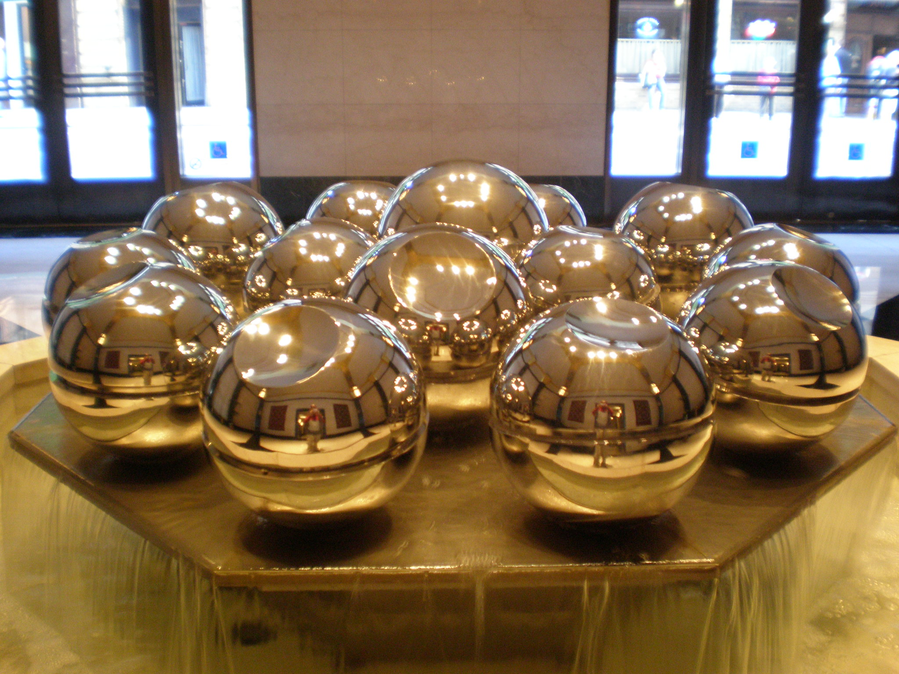

The San Francisco Ferry Building is a terminal for ferries that travel across the San Francisco Bay, a foodhall and an office building. Designed in 1892 by American architect A. Page Brown in the Beaux Arts style, the ferry building was completed in 1898.
The Grand Nave as it appared in 1898At its opening, it was the largest project undertaken in the city up to that time. Brown designed the clock tower after the 12th-century Giralda bell tower in Seville, Spain, and the entire length of the building on both frontages is based on an arched arcade.
It was so well built, with it's arched arcades, that it survived both the 1906 and 1989 earthquakes with very little damage. Today is serves Ferry's from Sausalito, Larkspur, Alameda, and Vallejo.
Before the Golden Gate or Bay Bridges were completed, ferry boats were the only way travelers and commuters could reach the city except by way of the Peninsula, a much longer voyage. At this time it was the 2nd busiest transit terminal in the world, second only to Charing Cross in London. When the bridges were built the Ferry building was rarely used and fell into disrepair. It was converted to standard office space.
Than, in the 1950s the Embarcadero Freeway was built which passed directly in front of the Ferry Building but when this was damaged in the 1989 Loma Prieta earthquake it was decided to remove this freeway altogether and a beautiful waterfront boulevard was developed.
Embaradero Freeway limiting access to the Ferry BuildingIn 1999 an extensive restoration was commenced and the Ferry Building opened 4 years later. The ground floor of the building was redesigned as a marketplace featuring about 50 restaurants, retail shops and food purveyors, most of which are open seven days a week. On Tuesdays, Thursdays, and Saturdays there is an expansive outdoor Ferry Plaza Farmer's Market.
A landmark building, 343 Sansome was designed by John Galen Howard, the founder of the U.C. School of Architecture and constructed in 1908. In 1929, five stories were added and the building was decorated in an elegant art deco design. In 1990, a 15-story tower was added adjacent to the initial 13-storied tower and the two buildings were combined.

On weekdays from 10:00 AM to 5:00 PM anyone can visit the rooftop garden deck. Located on the 15th floor and accessible by elevator, you are welcome to bring snacks and drinks and enjoye the beautiful outdoor terrace with breathtaking views of downtown.
A perfect place for an outdoor snackA popular destination for lunch, make sure to get their earlier if visitng during the lunch hour as there isn't an abudance of seats. On your way back down make sure to visit the beautiful fountain in the lobby.

A moving interactive fountainConstruction on the Transamerica Pyrimid began in 1969 and the building was finished in 1972. At height of 853 feet and 48 floors it was the tallest skyscraper in San Francisco from its construction until 2017 when the Salesforce Tower was completed.
Construction on the Pyramid in 1969Despite it's now famous design it was originally faced heavy opposition. The land use and zoning restrictionns for the land it was built on limited the number of square feet of office that could be built. The architect, William Pereira, designed it as a tall, four-sided pyramid with two 'wings' to accommodate an elevator and stairs.
It originally housed an observation deck, but this was closed down after 9/11 and is now a virtual observation deck with live camera's that guests can control from the lobby. In 2020 it was sold for 650 million dollars.
The hollow glass room at the very topThe spire on the top of the building is actually hollow and is lined with a 100 foot steel railway at a 60 degree angle and then steel ladders. These allow access to the red aircraft warning light on the top of the pyramid.
Today the building houses offices for Merrill Lynch, Mars Inc, Pantheon Ventures, TSG Consumer Partners, Greenhill & Co, and others.
The beautiful gardens and pond at the baseAdjacent to the building is a half-acre public space with redwood trees transplanted from the Santa Cruz mountains, as well as a fountain and pond with bronze sculptures. Don't miss the placard for San Francisco's famous canine's 'Bummer' and 'Lazarus'
Before cellphone and touch tone land lines callers couldn't directly dial numbers, they had to call up an exchange and an operator would manually patch their call through. The Old Chinese Telephone Exchange was one such building, though unrivaled in it's beauty by other exchanges.
The original building destroyed by fire in 1906It opened in 1896 but was destroyed by fire during the 1906 Earthquake. It was rebuilt in 1909 and served up to 3000 phones. The exchange was staffed with 40 operators, who had to be able to recall from memory each of these numbers. They had to know the names, numbers, address for each of the lines and often had to speak in multiple dialects.
In the 1960's it was a popular tourist attraction, and greyhound buses would pull up to the window to gawk at the stylish femaile operators, clad in embroidered silk dresses.
Operators hard at workThe operators were not paid very well, indeed they fought against a 7-day work week and low wages. But it was a tight-knit group, many people were related and often got the job through friends or family.
The exchange shut down in 1949 after technological advances negated the need for manual operators. It now houses a bank servicing local the local community.

Nearby you can visit the Golden Gate Fortune Cookie Factory that is still in operation today and watch as they make fortune cookies. Also next door is the Porstmouth Square where Mahjong is a popular pastime.
In 1953 the US placed an embargo on China after they entered into the Korean War. In an effor to improve local business the Chinese Chamber of Commerce held an essay contest for suggestions. The winner proposed an authentic archway at Bush & Grant streets.
The Gate under constructionIn 1969, after years of funding issues, Taiwan donated materials to build the Gate. The then Mayor of San Francisco George Christopher held a design competition and 3 Chinese-American landscape architects won the competition with the current design, which is in the traditional Chinese pailou style.
The gate is gaurded by a male and female lion on either side. The male lion has his paw atop a stone, symbolically guarding the the structure, while the female lion has her paw on a juvenile lion, symbolically guarding the occupants within the city.
The male and female lions guarding the entranceAtop the gate the fish symbolize prosperity and the dragons symbolize power and fertility. Between them is an orb representing the Earth.
The signs above the largest portal for vehicles reads 'All under heavan is for the good of the people', the Western portal sign reads 'Trust & Peace', while the Eastern portal reads 'Respect & Love.
The Dragon Gate lit up at nightTake in the amazing sights and sounds of Chinatown while you walk through, and be sure to stop in local markets to see some incredible food offerings.
Oringially designed in 1948, Frank Lloyd Wright was commisioned by the V.C. Morris company to make a gift shop for them. The area was back then known as the red-light district of the city.
The striking exterior draws people inIt has since housed a number of tenants but has always made it tricky for store managers to contend with the ongoing parade of tourists, keen to see the impressive interior.
The constant influx of tourists, though, allowed the the building to gain Landmark Status from the City of San Francisco in 2016
The incredible bubbled cieling adds warmthThe distinctive arched brickwork was designed to lure passers-by off the street and into the airy interior of the shop. The interior is bright and airy, aided by the beautiful bubbled cieling.
The curved ramp is the most notable part of the space and is a prototype for the ramp in the interior of the Solomon R. Guggenheim Museum in New York City which Frank Lloyd Wright designed in 1952.
The store in 1960 with a manager and the owner Allen AlderTake note of the original shelving throught the store as well as an old dumbwaiter, and a chut that the original gift shop used to send receipts from floor to floor.
Union Square got its name when it was once used for rallied supporting the Union Army during the Civil War. It was originally a sand dune but built into a public park in 1850 by San Francisco's first mayor John Geary.
Union Square in 1905, one year before the EarthquakeThe Dewey Monument at the center of the square was erected in 1903 as a tribute to both Admiral George Dewey's victory at the Battle of Manila Bay during the Spanish-American War as well as the then recently assassinated President William McKinley. It depicts Nike, the Greek Goddess of Victory and was modeled after Alma de Bretteville who went on to marry sugar magnate Adolph Spreckels, one of the city's richest citizens.
In 1939 a large undergournd parking garage was built undert the sqaure and it was teh world's first underground parking garage. It was designed to be impressive from above and raised up the curbs and gardens.
Nike, the Goddess of Vicotry atop the Dewey MonumentIn 1996 the city decided to renovate the square and opened it up to competition. The newly renovated Sqaure opened on 2002 and has proven to be a great sucess. The site hosts hundreds of events per yeaer including musicial performances, art exibitions as well as a site for the Chinese New Year Parade.
The Square is bordered by some very unique buildings like the Tiffany store, Westing St. Francis Hotel and Apple's store which holds the largest single plane pieces of glass in the world.
Union Square in 1968 from the St. FrancisSome restaurants in the vincinity offer some amazing views of the square including The Rotunda at the top of Neiman Marcus. Stop by the Grand Hyatt for a bite in their OneUP lounge.
The first part of the park between Mission and Howard streets was opened in 1993 and the expansion to Folsom was opened in 1998 along with the memorial to Martin Luther King.
Take a peak under the waterfall memorial to MLKA memorial featuring a majestic waterfall and shimmering glass panels inscribed with Dr. King’s inspiring words, poems and images from the civil rights movement adorns one side of the park.
Yerba Buena was the name of the city before being called San Francisco and means 'good herb' in Spanish and refers to the yerba buena plant which used to be abundant in the are.
The expansive field is bordered by redwoodsLocated in the park is the Yerba Buena Center for the Arts, a contemporary arts center in the North block. In the southern part is the Zeum, a children's media and technology creativity museum. An ice skating rink, a bowling alley, and a restored 1906 carousel by Charles I. D. Looff can also be found in the area.
Just to the south of the Park is the San Francisco Marriott which has a unique bar on its 39th floor called The View Lounge. Seatting is at a premium but the views are worth it.
The expansive upper area is home to a restaurant and tea houseThe park hosts free outdoor concerts every Thursday in the summer and is close the Jewish Contemporary Musuem and the SF Moma. The building under construction is the Mexican Museum, which began construction in 2015.
The San Francisco MoMA features an incredible collection of 33,000 works of painting, sculpture, photography, architecture, design, and media arts and was the first museum on the West Coast devoted solely to 20th-century art. It has 170,000 square feet of gallery space which is bigger than the MoMA in New York City.
Andy Warhol's 'A Set of Six Self Portraits'The SF Museum of Modern Art was founded in 1935 used to be in the War Memorial Building on Van Ness. The current building was built in 1995 and designed by Swiss architect Mario Botta. The Museum was expanded in 2013 to incorporate a large donation of works by the billionaire founder of The Gap, Donald Fisher who now serves as President of the Museum.
Jackson Pollock, Clyfford Still and Arshile Gorky all had their first Museum shows at the MoMA and it features incredible works from René Magritte, Piet Mondrian, Marcel Duchamp, Jasper Johns, and more.
The beautiful rooftop garden opened in 2009The Musuem offers a lot of dining options as well as two great gift shops. The cost is $25 per ticket but is free for kids under 18. A great way to experience the Musuem is to take the elevator up to the seventh floor and navigate down floor by floor via the internal stairways on the east side of the building.
The incredible 'Living Wall' in the atriumDon't miss In Situ, the restaurant located in the lobby where each dish is a recipe from a famous Chef from around the world. The restaurant's menu is curated by reknowned Chef Corey Lee of Benu.
The building at 140 New Montgomery was originally built in 1925 as the new headquarters for the The Pacific Telephone & Telegraph Company. It is an incredible example of Art Deco and is only a short walk from the SF MoMA.
The stunning entrance to 140 New MontgomeryWhen it opened on May 30, 1925, The Pacific Telephone Building was San Francisco's first big skyscraper and the tallest building in the city until 1964. It was also the first high rise on the West Coast for a single tenant. When AT&T bought the PacBell in 2007 they planned to turn the building into luxury condo's put the 2008 financial crisis put those plans on hold and the building sat empty for 4 years.
Finally in 2011 they turned the building into upgraded office space after a $100 million renovation and it was sold in 2016 for $284 million. Yelp is the current tenant of the building.
Large Eagles statues sit on the buildings topThere are 13 foot tall statues of eight eagles that perch atop the tower's crown and the building's L—shaped floor plan and decorative spotlights highlight the exterior's terra cotta ornamentation day and night.
Also, for 44 years until 1978, the top of the roof was used to convey official storm warnings to sailors in the form of a 25 feet long red flag by day, and a red light at night.
The luxurious lobby showcases Art Deco styleAn intersting moment was in 1929, when Sir Winston Churchill visited the building and made his first transatlantic telephone call, phoning his London home.
Salesforce Park sits atop the Transbay Transit Center which is the primary bus terminal and future rail terminal for the San Francisco Bay Area. It was needed after the 1989 Earthquake damanged the Transbay Terminal built in 1939. Funds were approved in 1999 and construction began in 2010.
The winning designn proposal for the parkBelow the park is 4 floors of retail, dining, and office space as well as ticketing and boarding platforms for busses. The entrance to the park is a free 20 person aerial tram located at Mission Street and Fremont Street and is the first tram in San Francisco since the closure of the tram at the Cliff House in 1961.
The park is a living roof with 600 trees and 16,000 plants arranged in 13 different botanical feature areas. It features a walking path surrounding grassy lawns, dancing fountains, a children’s play area, and an amphitheater.

The amphitheater hosts free live yoga classes, concerts late night movies. The redwoods, bamboo, and palm tree plays hosts to butterflies, hummingbirds and bees.
Interestingly the entire center was abruptly ordered closed in September of 2018, only 6 weeks after opening, following the discovery of a “major crack” in a steel beam supporting the rooftop park. Repairs were swiftly completed and the park reopened in July of 2019.
The amphitheater hosts live music and eventsThere is a proposal 13 new skyscrapers around the park as well as a proposal to add a second Transbay tube but this extension would cost as much as $6 billion on top of the $2 billion already spent, and is currently unfunded.
Constructed in 1939 as a US Post Office, in the 1980s the building was made available by the Postal Service for development, and the design of the was led by the firm founded by William Pereira, designer of the Transamerica Pyramid.
Rincon Center under construction in 1939.The interior features the renowned "History of California" murals, by Russian immigrant muralist Anton Refregier. The murals the history of California in the Social realism style, but as they were completed immediately following World War II, the artist's detractors criticized his artistic style and questioned his political leanings.
The controversy eventually reached the U.S. Congress, where critics called for the murals to be destroyed. The murals led to the preservation of the post office lobby as part of the Rincon Center development
Anton Refregier's mural showing Sir Francis DrakeThe atrium is topped by a 200 foot long skylight and features the central and distinctive floor to skylight "Water Column" installation art work. It was designed by the contemporary artist Doug Hollis.
The water feature is a continuous 85 foot column of water drops, coming from an eight-foot by eight-foot acrylic glass box with some 4,000 holes in it placed at the ceiling level.
Yank Sing hosts a large event in the atriumThe main tenant in the property is Google which expanded it's lease to 42,000 sq feet in 2020. Don't miss the best Dim Sum in the city at Yank Sing!